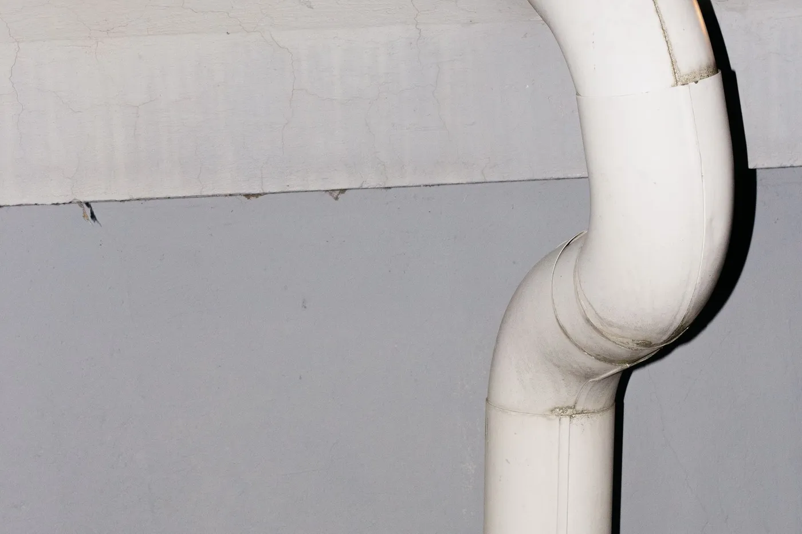

What Does Crawl Space Radon Mitigation Involve?
We install a heavy-duty polyethylene vapor barrier across the entire crawl space floor and up the foundation walls, taping every seam and sealing it around piers, ductwork, and plumbing penetrations. A suction point is set beneath the barrier and connected to an exterior fan through sealed PVC pipe, the same way a sub-slab system works, so the space underneath the barrier stays under constant negative pressure. Any crawl space vents get sealed as part of the same job, since open foundation vents work against the system by letting outside air undo the pressure difference.
When Do You Need Crawl Space Radon Mitigation?
- Your home is one of Jacksonville’s older builds with a raised crawl space instead of a slab foundation.
- A radon test came back elevated and an inspector confirmed the home has crawl space areas, even if only under part of the house.
- You’ve noticed musty odors, visible moisture, or wood that feels soft near the crawl space access door.
- A home inspection ahead of a sale flagged both radon and general crawl space moisture in the same report.
Why Does Radon Build Up in Crawl Spaces?
An open dirt crawl space has far more exposed soil surface than a poured slab does, and every square foot of that exposed dirt is a potential entry point for radon rather than just the cracks and joints a slab has. Warm, humid Jacksonville air entering through foundation vents also tends to draw the cooler, denser soil gas upward through the exposed ground, especially during spring and summer months.
Without a vapor barrier, that gas moves fairly freely into the floor joists and subfloor above, then into the living space through normal air movement in the house.

What Affects the Cost of Crawl Space Radon Mitigation in Jacksonville?
A vapor barrier and suction system for a typical Jacksonville crawl space runs $900 to $1,800, depending mostly on square footage and how many piers, ducts, and penetrations need to be sealed around. Homes with limited crawl space height, meaning less than about 24 inches of clearance, sometimes add labor time, and homes with standing water or drainage issues may need a sump or French drain addressed first before a vapor barrier makes sense.
Encapsulation vs. Suction: Which Do You Need?
A vapor barrier alone helps with humidity and slows radon movement, but it is not a stand-alone fix for an elevated reading, since sealed ground still lets gas build up pressure underneath the barrier over time. Active suction, a fan pulling air from beneath the barrier and venting it outside, is what actually removes the radon rather than just slowing it down, which is why almost every Jacksonville crawl space job pairs both rather than choosing one over the other.
Frequently Asked Questions
Does crawl space encapsulation alone fix a radon problem?
Encapsulation on its own reduces radon entry by sealing the crawl space floor and walls, but most Jacksonville homes still need an active suction point and fan added to the encapsulated space to reliably get below the 4 pCi/L action level. Sealing without suction slows radon down; it doesn’t remove it.
How do I know if my Jacksonville home has a crawl space or a slab?
Homes built from the 1990s onward in Jacksonville are almost always slab-on-grade, while older homes in neighborhoods like Riverside, Avondale, and parts of Springfield were more commonly built with a raised crawl space. If you’re not sure, checking for a low access door along the home’s exterior foundation wall, usually 18 to 24 inches tall, is the quickest way to tell.
Does crawl space radon mitigation help with humidity too?
Yes. A sealed vapor barrier that keeps radon out also blocks the ground moisture that drives musty odors, wood rot, and mold growth in a crawl space, so most homeowners notice a drier, better-smelling space in addition to a lower radon reading.